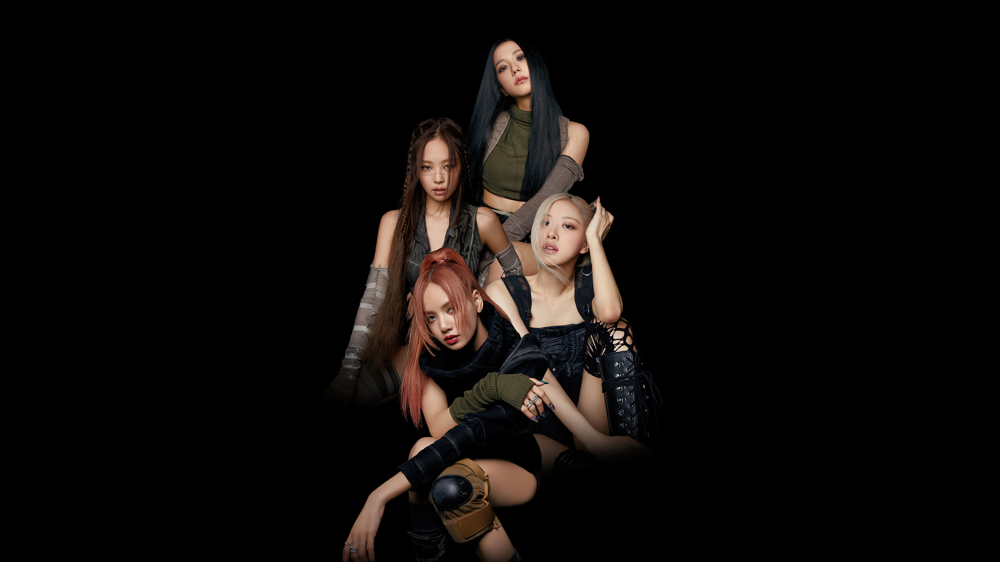
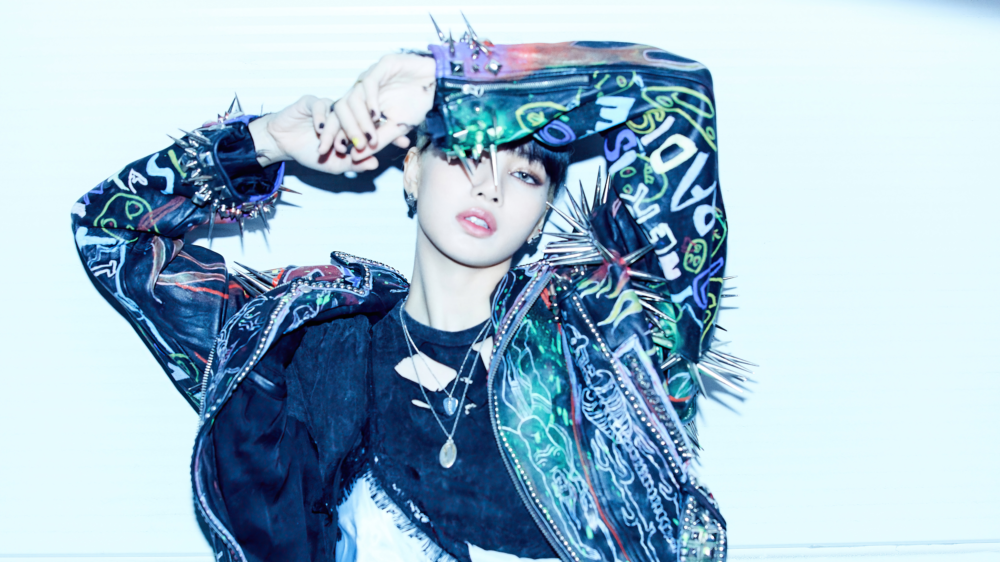
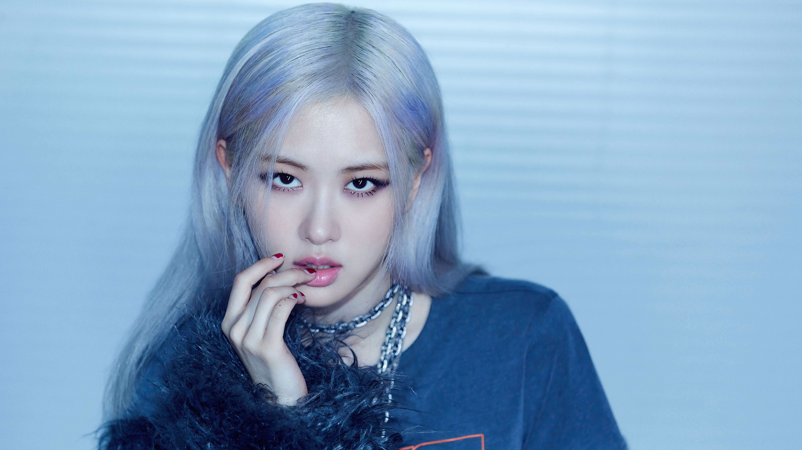
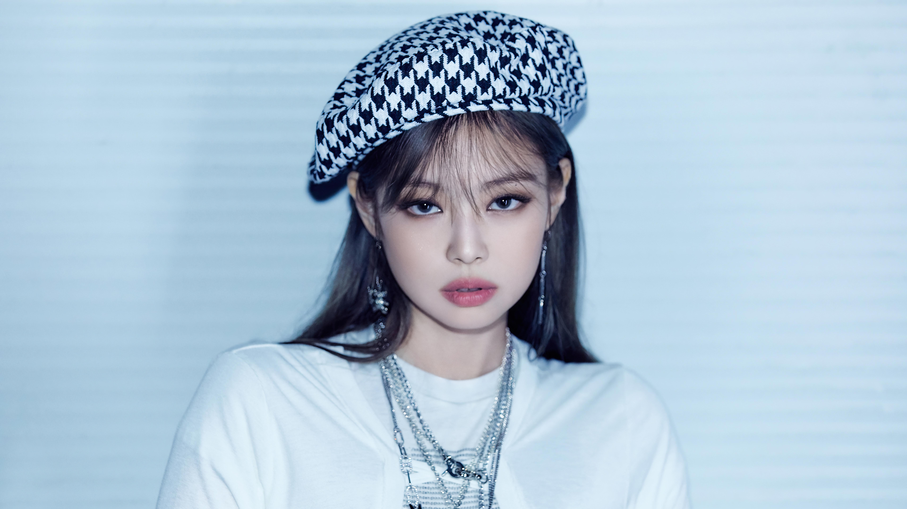
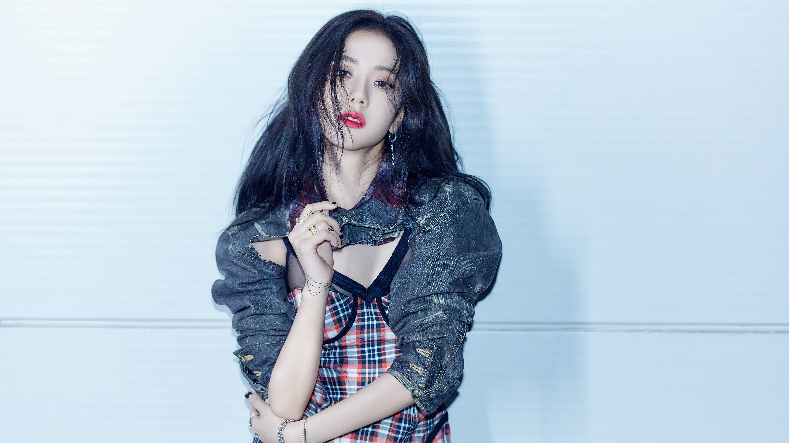

BLACKPINK, YG Entertainment’s 4-member Korean female group consisting of JISOO, JENNIE, ROSÉ, and LISA, released their debut album "SQUARE ONE" in August 2016.Soon after "SQUARE TWO" and "AS IF IT’S YOUR LAST" were released and dominated the music charts which drew great attention.
In June 2018, they released their 1st EP "SQUARE UP" and their title song "DDU-DU DDU-DU" M/V broke many records and was acknowledged as the first K-Pop group to earn 1 billion views on YouTube. In April 2019, with their successful release of their 2nd EP "KILL THIS LOVE", they’ve become the first K-Pop girl group to perform at the Coachella Music Festival , while wrapping up their 2019 World Tour [IN YOUR AREA] held across 23 cities of 4 continents.

Lalisa Manobal (birth name: Pranpriya Manobal, born March 27, 1997 in Buriram Province, Thailand) better known by her stage name, Lisa, is a Thai rapper, singer and dancer, based in South Korea. She is a member of Blackpink.
Her birth name is Pranpriya Manobal, she later legally changed her first name to Lalisa. Her ethnicity and nationality is Thai. Lisa's biological parents' names have not been released to the public, her stepfather is Marco Bruschweiler, a Swiss renowned chef, active in Thailand.
In 2016, she took her stage name of Lisa and became the main dancer, lead rapper, a supporting vocalist and the youngest (aka maknae in the k-pop industry) of K-pop girl group, Blackpink, which debuted on August 8, 2016. Lisa is also the first non-Korean YG Entertainment artist.

Roseanne Chae-young Park (born February 11, 1997 in Auckland, New Zealand) better known as Rosé, is an Australian singer based in South Korea. She is a member of Blackpink.
Born as Roseanne Park in Auckland, New Zealand, she was given the Korean name of Park Chae-young and grew up in Melbourne, Australia.
As a child, Rosé already had a passion for singing. She was a part of her church's choir in Australia. When she found out that YG Entertainment were holding their auditions in Sydney, Australia back in 2012, she quickly made her way there from Melbourne to audition. Rose' ranked first in the auditions became a part of YG Entertainment on the same day. After training for four years, YG finally made her the main vocalist and lead dancer of Blackpink. She was the last member to be revealed in the band. She attended Canterbury Girls' Secondary College in Melbourne, Australia.

Jennie Kim, known as Jennie , was born in Cheongdam-dong, South Korea on January 16, 1996. Jennie studied abroad in New Zealand. She joined YG in August 2010.
Jennie Kim was born in Cheongdam-dong, South Korea and grew up in Auckland, New Zealand until her high-school years, when she moved back to South Korea. After she settled in Seoul, she immediately became a trainee of YG Entertainment in 2010. She was raised abroad, so she speak fluent English. She is also fluent in Korean and Japanese. She was only 14 when she joined YG, but she has proved that she has much potential. She has also collaborated with her fellow YG artists before she was cast as a member of Blackpink. Jennie is said to be the possible leader of the group, but after the band debuted, there was no leader because of their similar ages.

Jisoo was born on January 3, 1995 in Gunpo. She's a member of Blackpink.
She became a YG Entertainment trainee in August 2011 & trained for 5 years. In August 2016, she became a member of Blackpink, as a lead vocalist & visualist in the group.
Before she becoming a YG trainee, she was known by many for her beauty. She was quite popular in school because of her looks & talents. She used to study at the School Of Performing Arts High School. She eventually transferred schools when her family moved to Seoul.
In 2012, she was revealed through the "Who's That Girl?" teaser by YG Entertainment. That was followed w/ 2 photos in January 2013.